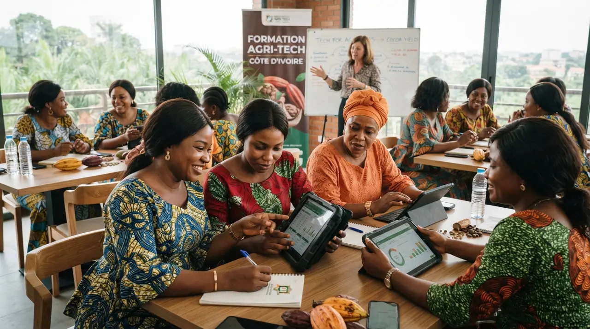

AGROPULSE GLOBAL SOLUTIONS
AGIR-IA · une initiative distincte.
AGIR-IA est présenté séparément du Fellowship YIDA-Cashew. La Fondation AWI est identifiée comme partenaire confirmé.
AGIR-IA
Intelligence artificielle et entrepreneuriat agricole.
AGIR-IA est distinct du programme YIDA-Cashew. La Fondation AWI est le partenaire indiqué comme confirmé dans les informations disponibles.
Le contenu détaillé des sessions et les suites du programme seront publiés après confirmation.